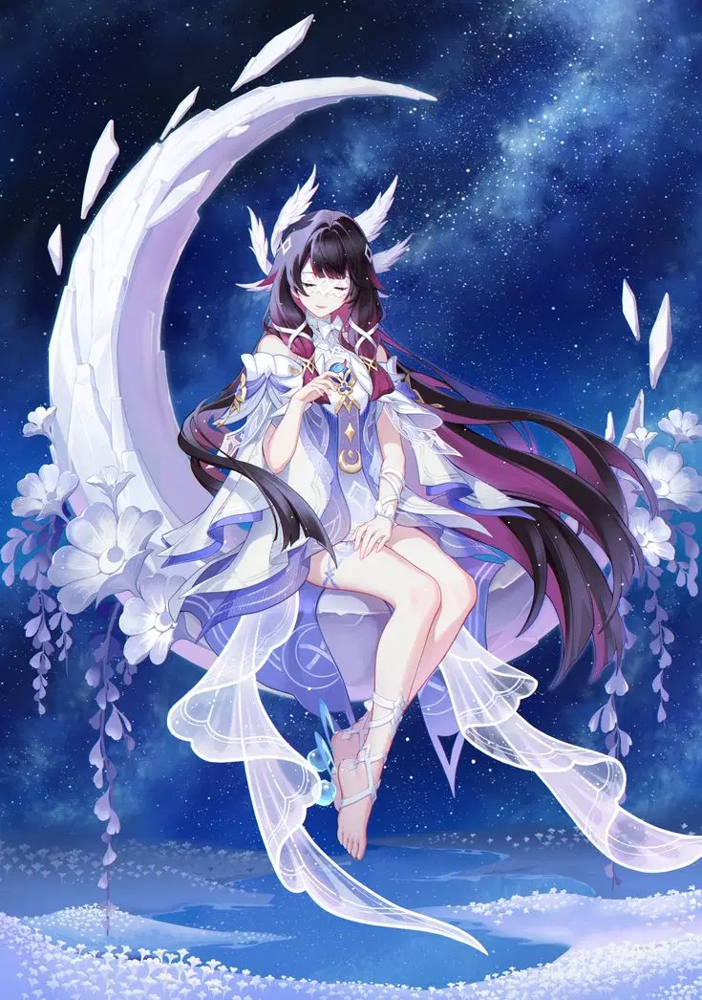

Columbina (Kuutar) was born ~500 years ago from pure moonlight within the Sanctum of the Oathbearer, fulfilling an ancient prophecy of a new Moon Goddess.
She retained only fragments of memory—primarily a song from her birth.
Adopted by the Frostmoon Scions, she was worshiped as a deity.
However, they valued her power more than her existence, constantly demanding blessings and offerings.
This created emotional isolation and resentment.
Unable to meet endless expectations, she abandoned the Scions.
This marks her first rejection of imposed identity.
The Tsaritsa offered her a “second home.”
She became Columbina, The Damselette, Third Harbinger.
Unlike others, she was never deployed—only preserved for her power.
Maintained cordial ties with Sandrone, Arlecchino, Signora, Tartaglia, and Capitano.
Tartaglia feared her. Wanderer described her as emotionless.
She participated in tea gatherings but remained distant.
Assisted Dottore in Light Realm research, but withdrew after sensing his malicious intent.
Eventually completed an unknown task assigned by the Tsaritsa, losing much of her divine power.
Recognizing the Fatui mirrored the Scions’ exploitation, she left.
Palestar Edict was issued to capture her.
Returned to Hiisi Island to recover strength.
Developed bonds with nature and kuuhenki.
Met Traveler, formed trust, revealed partial truths.
Helped recover memories of their arrival in Teyvat.
Rerir hunted her; she repeatedly protected allies.
Eventually forced into retreat due to insufficient power.
Used Moon Marrow (with Arlecchino & Traveler) to regain strength.
Still insufficient to defeat Rerir alone.
Teyvat began rejecting her existence.
She began fading, nearly ceasing to exist.
Captured by Dottore.
Entered Moon Gate willingly to prevent exploitation of her power.
Entered realm where time flows backwards.
Met Rerir again—this time cooperative.
Left messages across time to guide allies.
Met Canon, Aria, and Sonnet.
They transferred their lunar authorities to her.
Became the Trilune Goddess—holder of all Moon Authorities.
Now surpasses her previous godhood.
Returned through combined effort (Sandrone’s formula, allies).
Defeated Dottore using Trilune power.
Stopped his control over time and power systems.
Sandrone destroyed (unable to revive).
Tsaritsa revoked capture order.
Lives between Teyvat and the Moon.
Helps Traveler understand higher truths.
Recognizes both Moon and Teyvat as home.
Primordial-level being tied to Light Realm and Lunar Authority.
Existence partially incompatible with Teyvat.
Rejected all imposed identities.
Chose her own name and existence.
Represents freedom beyond gods, nations, and systems.
🌙 Lunar Reaction System:
Triggers multiple advanced reactions simultaneously such as Lunar-Charged, Lunar-Bloom, and Lunar-Crystallize.
🌀 Gravity Mechanic:
Builds “Gravity” stacks (max 60). Upon reaching limit, triggers Gravity Interference, dealing multi-element AoE damage.
⚡ Adaptive Element Output:
Damage type changes dynamically (Electro / Dendro / Geo) based on dominant reaction.
🌊 Off-field Presence:
Summons continuous Hydro AoE that follows active character.
🌙 Gravity system triggers multi-element AoE
✨ Enables Lunar reactions
⚡ Meta-defining hybrid playstyle